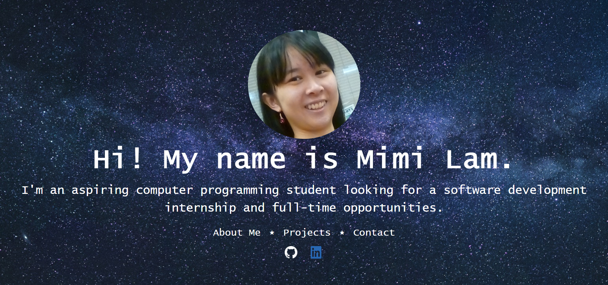
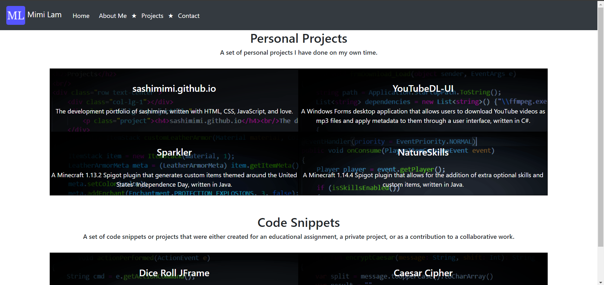

sashimimi.github.io is the development portfolio of sashimimi and is the website that this page is on!
It was built using HTML, CSS, JavaScript, and the Bootstrap library, allowing for responsive web design.
It is hosted on GitHub Pages, a static website hosting service offered by GitHub.
This project began as a desire to create a central website where I could document my projects.
Although it primarily serves as a method of showcasing my abilities, I also saw it as a way to watch my growth as I continue to learn.
As it is my personal portfolio, I wanted it to express the following:
- my personality
- my skills
- and a way to contact me.
The cover page is one of the most important pages on the website, as it is the first impression a visitor receives of me. My main goals for this page were to convey a glimpse of my personality and set a theme for the website going forward.
A showcase of skills is extremely vital in software development, which makes the project page the most important page on the website. I wanted to add flair and color to this page that would make this page unique compared to the other pages, which led to the development of the project tiles. The project tiles are created using code from each project, making each tile as unique as the project itself. An issue that I ran into involved the creation of opacity in the image, which would also opaque the text. To solve this, I decided to increase opacity in the image source file, allowing for the text to remain consistent.
Another issue I ran into when developing the project tiles was only portions of the tile was clickable. After some trial and error, this bug was fixed by enveloping the contents of the project tile in the a element and applying Bootstrap classes to it instead of a div element.
 Project Repository
Project Repository

The cover page on version 1.0.0

The projects page, showcasing the project tiles on version 1.0.0
An example of a broken project tile. Notice how the link stops functioning when hovering over certain areas of the tile.